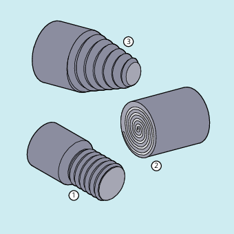

Mit G33 lassen sich Gewinde mit konstanter Steigung fertigen:
Zylindergewinde ①
Plangewinde ②
Kegelgewinde ③

| Hinweis |
Technische Voraussetzung für das Gewindeschneiden mit |
Mehrgängige Gewinde
Mehrgängige Gewinde (Gewinde mit versetzten Schnitten) können durch die Angabe eines Startpunktversatzes hergestellt werden. Die Programmierung erfolgt im G33-Satz unter der Adresse SF.
| Hinweis |
Falls kein Startpunktversatz angegeben ist, wird der in den Settingdaten festgelegte "Startwinkel für Gewinde" verwendet. |
Gewindekette
Durch mehrere, nacheinander programmierte G33-Sätze kann eine Gewindekette gefertigt werden:
| Hinweis |
Mit Bahnsteuerbetrieb |
Drehrichtung des Gewindes
Die Drehrichtung des Gewindes wird durch die Drehrichtung der Spindel bestimmt:
Rechtslauf mit M3 erzeugt Rechtsgewinde
Linkslauf mit M4 erzeugt Linksgewinde
Zylindergewinde:
G33 Z… K…G33 Z… K… SF=…Plangewinde:
G33 X… I…G33 X… I… SF=…Kegelgewinde:
G33 X… Z… K…G33 X… Z… K… SF=…G33 X… Z… I…G33 X… Z… I… SF=…
| Befehl zum Gewindeschneiden mit konstanter Steigung | ||
| Endpunkt(e) in kartesischen Koordinaten | ||
| Gewindesteigung in X-Richtung | ||
| Gewindesteigung in Y-Richtung | ||
| Gewindesteigung in Z-Richtung | ||
| Längsachse | ||
| Planachse | ||
| Gewindelänge und Gewindesteigung für Zylindergewinde | ||
| Gewindedurchmesser und Gewindesteigung für Plangewinde | ||
| Gewindesteigung für Kegelgewinde Die Angabe ( | ||
< 45°: | Die Gewindesteigung wird mit | ||
> 45°: | Die Gewindesteigung wird mit | ||
= 45°: | Die Gewindesteigung kann mit | ||
| Startpunktversatz (nur notwendig bei mehrgängigen Gewinden!) Der Startpunktversatz wird als absolute Winkelposition angegeben. | ||
Wertebereich: | 0.0000 bis 359.999 Grad | ||
| Programmcode | Kommentar |
|---|---|
| N10 G1 G54 X99 Z10 S500 F100 M3 | ; Nullpunktverschiebung, Startpunkt anfahren, Spindel einschalten. |
| N20 G33 Z-100 K4 | ; Zylindergewinde: Endpunkt in Z |
| N30 G0 X102 | ; Rückzug auf Startposition. |
| N40 G0 Z10 | |
| N50 G1 X99 | |
| N60 G33 Z-100 K4 SF=180 | ; 2. Schnitt: Startpunktversatz 180° |
| N70 G0 X110 | ; Werkzeug wegfahren. |
| N80 G0 Z10 | |
| N90 M30 | ; Programmende. |
| Programmcode | Kommentar |
|---|---|
| N10 G1 X50 Z0 S500 F100 M3 | ; Startpunkt anfahren, Spindel einschalten. |
| N20 G33 X110 Z-60 K4 | ; Kegelgewinde: Endpunkt in X und Z, Angabe der Gewindesteigung mit K... in Z-Richtung (da Kegelwinkel < 45°). |
| N30 G0 Z0 M30 | ; Wegfahren, Programmende. |
Siehe auch:
Gewindeschneiden mit konstanter Steigung (G33, SF): Weitere Informationen
Gewindeschneiden mit zu- oder abnehmender Steigung (G34, G35)
Programmierter Einlauf- und Auslaufweg bei G33, G34 und G35 (DITS, DITE)
Schnellrückzug während Gewindeschneiden (LFON, LFOF, DILF, ALF, LFTXT, LFWP, LFPOS, POLF, POLFMASK, POLFMLIN)
Ballige Gewinde (G335, G336)